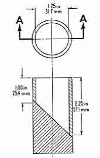

Avoiding Choking Hazards in Children's Toys
According to data published by the Consumer Product Safety Commission (CPSC) there were 16 toy-related deaths of children under the age of 15 in 2004. Among these the leading cause of death was by choking on small balls or toy parts. Between 1990 and 2004, at least 157 children died after choking or asphyxiating on a toy or toy part.
Since 1979 the CPSC has imposed regulations which ban certain types of toys for children less than three years of age. In 1994 Congress passed the Child Safety Protection Act (CSPA) which strengthened the earlier standards and also imposed strict labeling laws for manufacturers and retailers of children's toys which may present a danger to small children.
While the federal regulations have helped to protect children from dangerous toys, choking remains the leading cause of toy-related deaths. Despite the efforts of the CPSC to enforce the regulations, at times resulting in bans or recalls of specific toys, dangerous toys can still be found for sale in the US. Contrary to popular belief the CPSC does not test every toy currently on the market. It is important for parents to educate themselves regarding the dangers and to be vigilant in monitoring their children's playthings.

The CPSC uses a Choke Test Cylinder to determine whether a toy contains small parts that may be a choking hazard. Any part of the toy, including parts that can break off from the toy, which fits completely in this cylinder, is considered a small part and a potential choking hazard. Small balls have stricter guidelines since round objects can completely block the airway; any ball less than 1.75 inches is banned for sale to children under 3.
Adults can purchase a choke testing tube from toys stores or on the web. This can be used to test toys and other objects to determine whether they should be kept away form small children. However it should be noted that there are toys which pass the tube test which still present a danger of choking and for which parents must use their discretion.
Those responsible for the care of small children must also take care that toys meant for older children are kept away form those under three. For this reason the federal regulations include requirements for warning labels on toys intended for children between 3 and 6 if they can present a hazard to children under three. Before purchasing toys for small children you should become familiar with the warning labels and be on the lookout for them when shopping.
The warnings mandated under the Child Safety Protection Act are:
Choke Hazard Warnings for
1. Toys intended for children between 3 and 6 years old with small parts.
2. Small balls for children older than 3 with diameters of less than 1.75 inches.
3. Toys for children older than 3 that contain small balls.
4. Marbles.
5. Balloons. (According to published reports balloons cause more reported children's choking deaths than any other toy).
For a full description of the warnings and samples of the labels follow this link.
Recently the U.S. Public Interest Research Group (PIRG), a nationwide network of consumer advocacy groups, released their annual report on toy safety called "Trouble in Toyland". Their survey of toy stores in 2005 found that despite the federal regulations there are still toys being marketed to small children which contain parts that present a choking hazard.
Another finding of the PIRG report related to the increasingly popular use of the internet when shopping for toys. The CPSC does not currently require online toy merchants to display the types of warnings in place for brick and mortar toy stores. While some websites voluntarily display this information the majority of sites do not.
Additionally, many of the online toy sites provide a feature allowing customers to search for toys by age group. The PIRG researchers found that in some cases parents are directed to toys that are not appropriate for the targeted age group and which can present dangers to younger children.
When buying toys for children under the age of three the CPSC offers the following tips:
- Children under 3 tend to put everything in their mouths. Avoid buying toys intended for older children which may have small parts that pose a choking danger.
- Never let children of any age play with uninflated or broken balloons because of the choking danger.
- Avoid marbles, balls, and games with balls that have a diameter of 1.75 inches or less. These products also pose a choking hazard to young children.
- Children at this age pull, prod and twist toys. Look for toys that are well-made with tightly secured eyes, noses and other parts.
- Avoid toys that have sharp edges and points.
Toys can be fun and educational for young children. With the proper knowledge and vigilance parents can ensure that their children are protected from the dangers some toys can present.